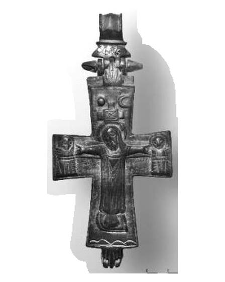
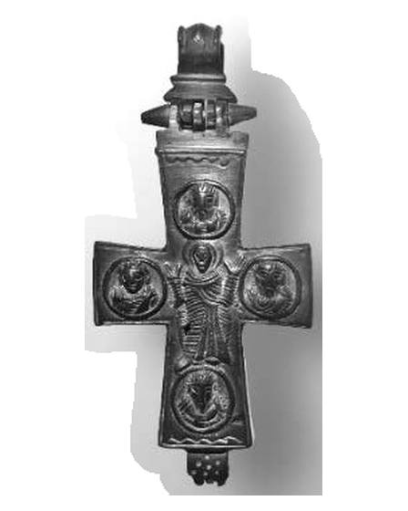

Catalog › CE-0311 · ERI2018-3
Encolpion bivalv de bronz, cat. 3, Muzeul Erimtan
sec. X–XII (901–1200) · loc necunoscut · Muzeul de Arheologie și Artă Erimtan (Erimtan Arkeoloji ve Sanat Müzesi), Ankara, Turcia
double-sided reliquary cross (enkolpion), bronz; c. X–XII (901–1200); find spot unknown; kept at Muzeul de Arheologie și Artă Erimtan (Erimtan Arkeoloji ve Sanat Müzesi), Ankara, Turcia.




Identificare
- Categorie
- Encolpion bivalv (relicvar)
- Material
- Bronz
- Tehnică
- Turnare în relief
- Stare
- Întreagă
- Dimensiuni
- Î 93 × L 58 mm
Iconografie
- Avers
- Răstignirea (Hristos în colobium); Sf. Ioan
- Descriere avers
- Hristos răstignit, în colobium, cu brațele întinse; pe brațul din dreapta Maica Domnului, pe cel din stânga Ioan Evanghelistul (în sursă „Ioan”); deasupra lui soarele (în stânga) și semiluna (în dreapta); lângă Maica Domnului inscripția ‘(Ι) δ (ετ) ον σον’, lângă Ioan ‘η µετηρ σον’. Figurile sunt în relief scăzut.
- Revers
- Maica Domnului Orantă; Evangheliști în medalioane
- Descriere revers
- Maica Domnului orantă, cu veșmânt larg, cu cute; pe cele patru brațe, în medalioane, cei patru evangheliști ținând o carte în mâna stângă. Figurile sunt în relief scăzut.
- Inscripții
- (Ι) δ (ετ) ον σον [ἴδε ὁ υἱός σου]; η µετηρ σον [ἡ μήτηρ σου]
- Limba
- Greacă
Datare și atribuire
- Datare
- sec. X–XII (901–1200)
- Centru
- Necunoscut
- Tipologie
- Pitarakis 2006, forma tip I
Descoperire
- Context
- Colecție (fără context)
- Coordonate
- 39.9370° N, 32.8610° E
- Precizia locului
- Loc de păstrare (loc de descoperire incert)
Păstrare și referințe
- Colecție
- Muzeul de Arheologie și Artă Erimtan (Erimtan Arkeoloji ve Sanat Müzesi), Ankara, Turcia
- Bibliografie
- O. Koçyiğit, Erimtan Arkeoloji ve Sanat Müzesi Bizans Dönemi Maden Haçları, „Hacettepe Üniversitesi Edebiyat Fakültesi Dergisi”, 35/2, decembrie 2018, p. 110–121 [Koçyiğit 2018], p. 116–117, cat. nr. 3, reprodusă la Res. 3 (p. 120). DOI: 10.32600/huefd.430267.
- Figura
- Res. 3
- Planșe
- Koçyiğit 2018, p. 120
- Analogii
- Pitarakis 2006, cat. 2, 12, 13, 44 (p. 58–61, 87, 91; sec. IX–XI); Muzeul de Arheologie din İstanbul (Acara Eser 2007, p. 142, 183–186; sec. IX–XII); Muzeul Sadberk Hanım (Bilgi 2007, p. 270; sec. XII–XIII); Ankara, Muzeul Civilizațiilor Anatoliene (Aydın 2003, Abb. 2); Amorium, mormânt (Yaman 2012, p. 336–339, fig. 8; sec. IX–XII)
- Observații
- Datare după Koçyiğit: Perioada Bizantină Mijlocie, sec. X–XII. Numărul de inventar nu e dat în sursă (piesele sunt numerotate „Res. No”); piesele au intrat în colecție unele prin cumpărare, altele prin donație, locul descoperirii nu se cunoaște; autorul le socotește de origine anatoliană. Dimensiuni date în sursă (cm): înălțime 9.3, lățime 5.8. Autorul descrie piesa ca „tam ve sağlam” (întreagă și în stare bună). Locul descoperirii nu e cunoscut cu precizie; punctul de pe hartă marchează locul de păstrare (Muzeul de Arheologie și Artă Erimtan), nu locul descoperirii. Coordonate: nu sunt date în sursă.
Citare: Corpus Encolpiorum, CE-0311, Encolpion bivalv de bronz, cat. 3, Muzeul Erimtan, --root/piese/ERI2018-3/ (accesat 2026-10-20).